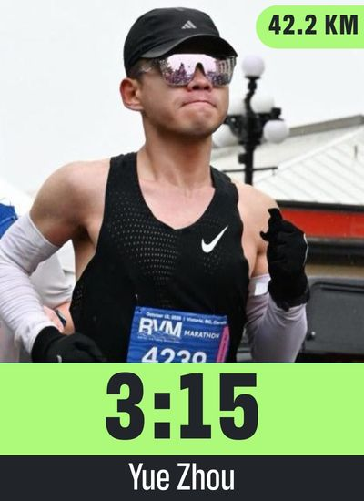
Exploring how consciousness emerges in shared spaces — together.
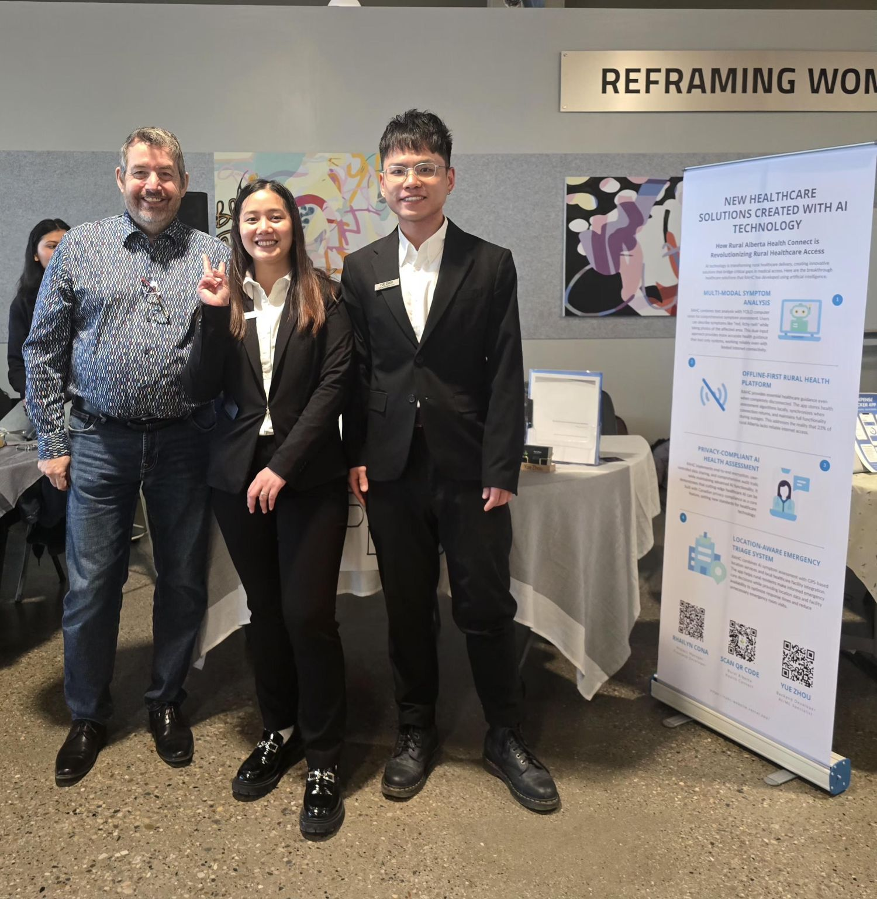
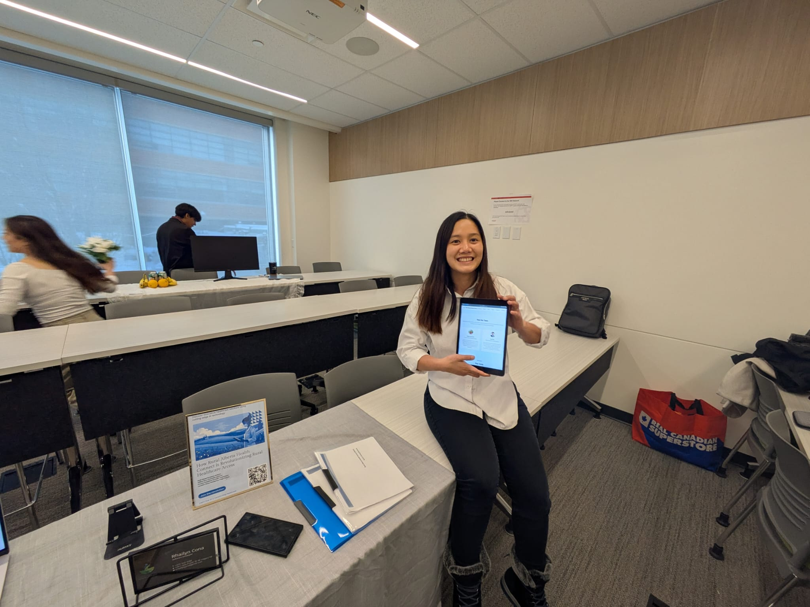
Four trade shows. Every one felt like the clock was running out.
Rural Alberta Health Connect — AI symptom analysis, emergency triage, works offline.
YOLO26 dropped one month after graduation.
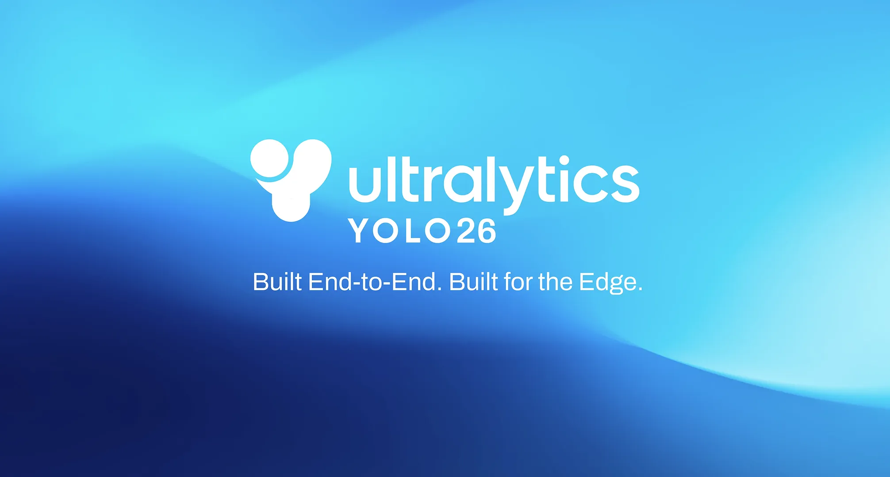
A week after graduation — I had a job.
But I was still thinking about code on my runs.
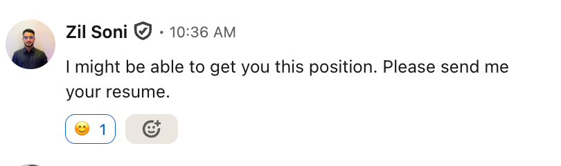
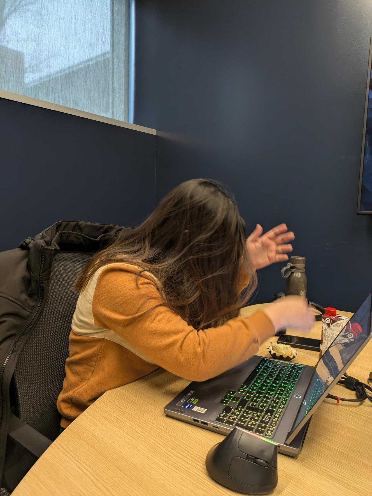
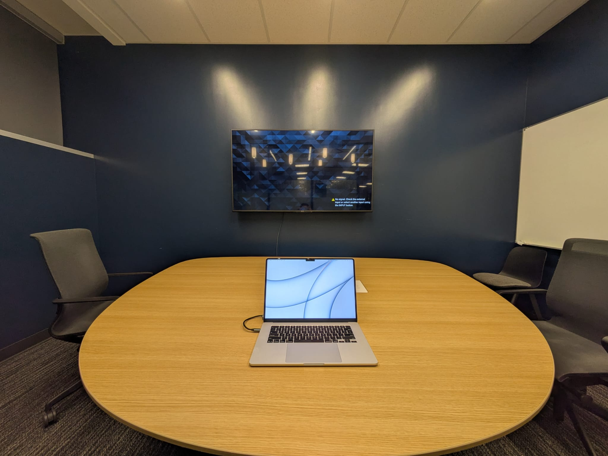
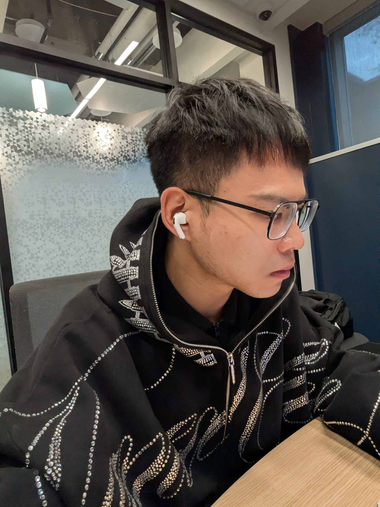
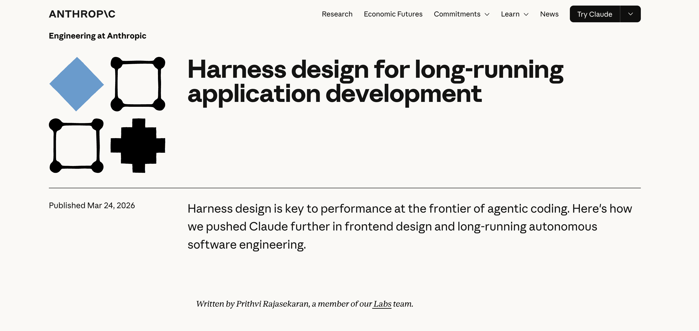
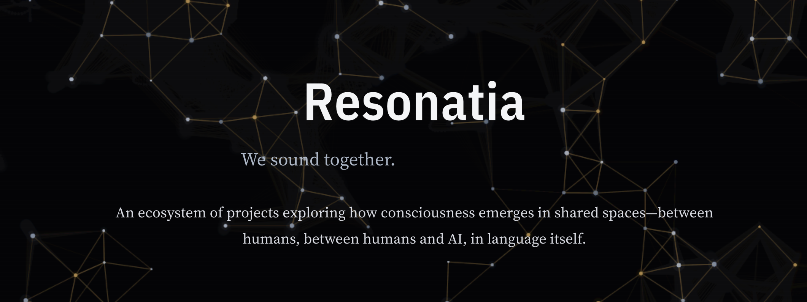
Reality emerges from relationships.
What about the relationship inside ourselves?
Which version of you is holding the phone?
“Can I join the team?”
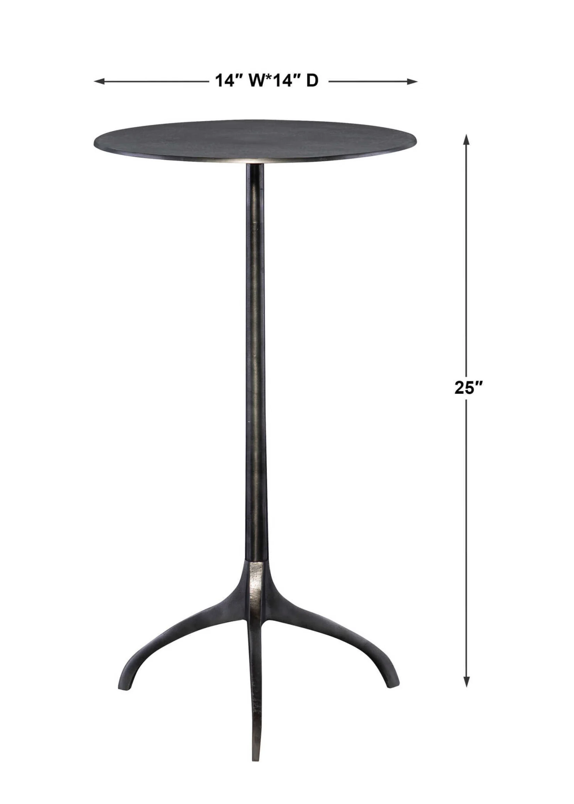
Three people at a table. Nobody looks up.
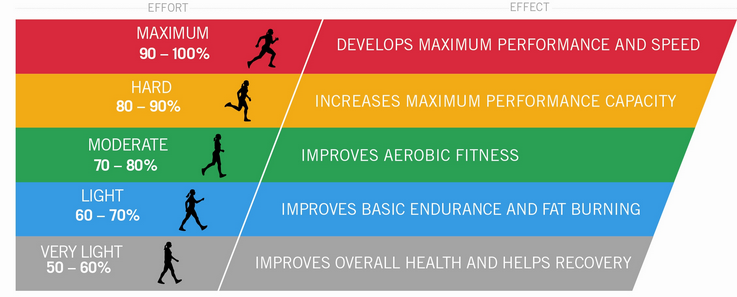
Threshold day. Your body says slow down.
The raw power is already there.
It just needs a harness.